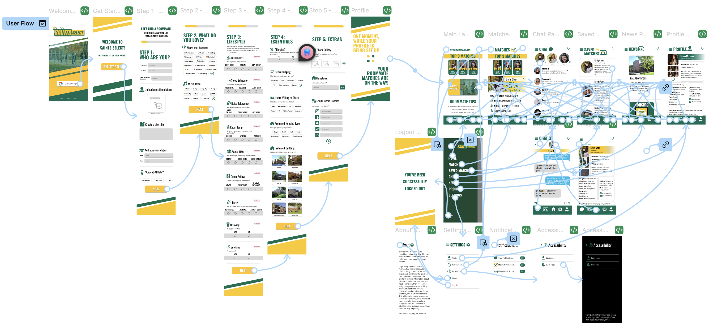

“[SaintsSelect] has the potential to change Siena’s student networking.” — Key insight from student questionnaries
Siena’s current roommate matching process often feels unreliable and difficult to navigate. Students only
provide limited information about themselves, which can lead to random or poorly matched roommate assignments.
Many students said the process made it hard to express important lifestyle preferences or get a sense of who
they would be living with.
Because of this, roommate conflicts can happen over things like sleep schedules, cleanliness, social habits,
or study routines. These issues can make the transition into college more stressful than it needs to be.
My partner and I saw an opportunity to redesign the experience from scratch; to create a system that
prioritizes
compatibility, transparency, and ease of use for Siena students.
Siena’s original roommate matching form lacked structure, personalization, and meaningful compatibility indicators.
Our design process focused on understanding student frustrations and turning those insights into a better roommate matching experience.

The SaintsSelect user flow (mobile version).
Our research focused on understanding why students felt dissatisfied with Siena’s current roommate matching system and what they believed would improve the experience. We collected feedback through student questionnaires and conversations with Siena students. A majority of students described the current process as stressful, unclear, and too random.
Some of the biggest concerns students mentioned included:
- Not enough personality or lifestyle questions
- Random roommate assignments
- Difficulty knowing if someone would be compatible
- Limited communication between potential roommates
- Outdated or incomplete profile information
SaintsSelect creates a more personalized and student-friendly roommate matching experience designed specifically for Siena students.

Smarter Matching Questionnaire
The app begins with a simple five-step questionnaire that guides students through important lifestyle and
living preferences. Instead of one long form, the questions are broken into smaller sections that feel easier
to complete.
The questionnaire focuses on topics like:
- Sleep habits
- Cleanliness
- Room temperature
- Study preferences
- Social habits
This approach helps students share more meaningful information while making the onboarding experience feel
less overwhelming.

Compatibility-Based Profiles
Students can browse roommate profiles that highlight compatibility based on shared habits and preferences.
Profiles are designed to make it easier to quickly understand if someone could be a good roommate match.
The platform also includes built-in messaging connected to Siena email accounts so students can safely
communicate with potential roommates directly within the app.
By combining matching, profiles, and messaging into one platform, SaintsSelect creates a more connected and
less stressful roommate search experience.
SaintsSelect received positive feedback from students, especially for its modern design, ease of use, and
focus on compatibility.
Many students described the platform as feeling more engaging and easier to navigate than Siena’s current
roommate matching process.
One student commented:
“It comes across as streamlined and more ‘fun’ to use than the existing roommate matching
system.”
The project was later presented to Siena’s Software Engineering program for continued development
into a fully functional, full stack application.
Check out the full Figma prototype
here!